«Катарсис»
С помощью ИИ: промптинг, работа с иностранными сервисами, анализ среды.
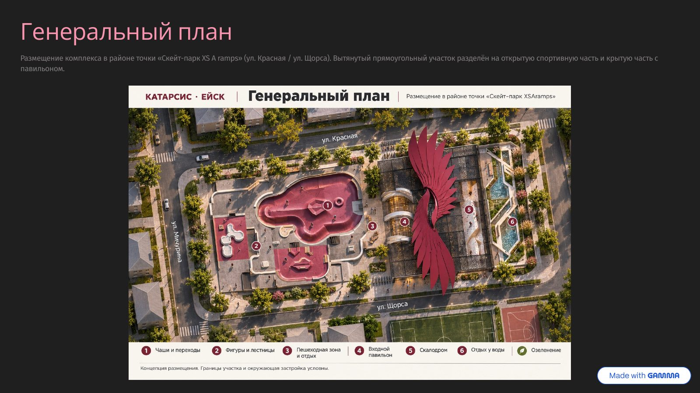
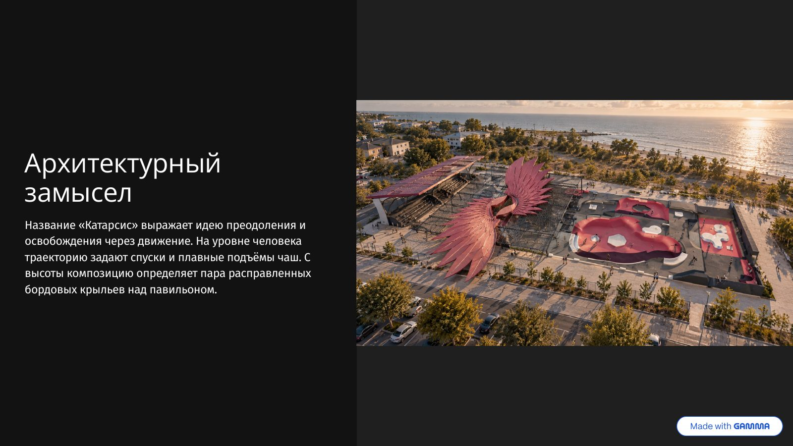
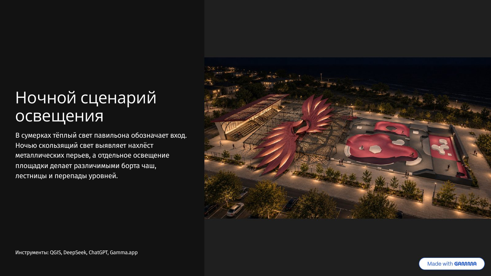
Результат: многофункциональный спортивно-игровой комплекс, Ейск.
Базовый вводный курс: строите цифровой двойник территории, анализируете её с помощью ИИ и собираете презентацию, которая убеждает заказчика и комиссию. QGIS и нейросети разбираем с нуля, специальных знаний в ИИ не нужно.
Официальное название программы: «Современные инструменты проектного анализа: ИИ и мобильные сервисы в работе с архитектурной средой»
Группа набирается · на 12 человек
Старт после набора группы. Оставьте заявку — мы согласуем дату старта.
Специальных знаний в ИИ не нужно: работа с нейросетями и QGIS разбирается с нуля, достаточно уверенно пользоваться компьютером. Глубину погружения в QGIS вы выбираете сами — через один из двух треков.
Проходите все три видеоурока, строите геоподоснову и схемы своего участка самостоятельно. Для тех, кому важен пространственный анализ как практический навык.
Смотрите только вводную часть QGIS для общего понимания, программу можно не устанавливать. Для презентации подойдёт любая схема территории из интернета — строгих требований нет.
QGIS — не обязательный тяжёлый модуль для сдачи курса, а факультативная глубина по выбору трека. Итоговая защита и удостоверение ЮФУ не зависят от того, какой трек вы выбрали.
Высшее образование на момент записи не нужно — участвовать и защищать проект можно сразу. Войдёте в профессию с рабочим набором ИИ-инструментов и готовым проектом в портфолио.
Ускорите предпроектный анализ и визуализацию: карты участка, сценарии и презентация для заказчика или комиссии — за 2,5 недели, без ухода в тяжёлую перестройку рабочих процессов.
Разберётесь, как работают генеративные нейросети, научитесь видеть их следы в студенческих работах и направлять студентов: ИИ — не чит-код для обмана системы и получения оценки, а рабочий инструмент для качественных архитектурных решений.
Вступительных испытаний нет. Удостоверение получают слушатели с высшим образованием. Если его пока нет, участвовать и защищать проект можно сразу — после защиты мы выдадим справку, а удостоверение после того, как вы его получите.
Карты, схемы и описания приходится собирать и оформлять вручную. На курсе схемы строятся в QGIS из открытых данных, а выводы по ним помогает формулировать ИИ.
Запрос «придумай концепт парка» выдаёт банальный результат. На курсе задачу ставят по схеме: роль, контекст, задача, примеры, формат, тон.
Анализ остаётся в таблицах и файлах. На курсе всё собирается в одну интерактивную презентацию, которую можно показать заказчику или комиссии.
Подложки, дороги, здания, рельеф, кадастр. Оформляете карту в QGIS и выгружаете в PDF.
Собираете техническое задание и контекст, строите сценарии и портреты аудитории с помощью языковых моделей.
Превращаете эскизы в визуализации с помощью нейросетей и собираете результат в итоговую презентацию.
Точная модель участка, готовая к любому анализу: подложки, транспорт, здания, рельеф, кадастр.
Анализ территории и прогноз поведенческих сценариев там, где раньше уходили дни.
Генерация вариантов решений и визуализаций с помощью нейросетей вместо одной ручной отрисовки.
Итоговая интерактивная презентация, которая выигрывает у заказчика и комиссии.

Сайт автора: ku1eshov.ru


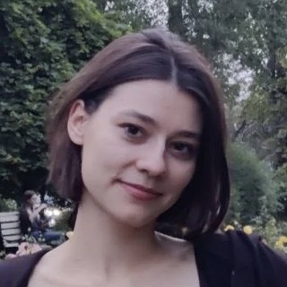
10 часов практики на живых воркшопах + 12 часов консультаций и самостоятельной работы между ними. Точные даты и ссылки на эфиры конкретного потока присылаем отдельным файлом-расписанием после зачисления. Метки показывают формат: ОНЛАЙН-ЭФИР встреча с группой в Яндекс Телемост, САМОСТОЯТЕЛЬНО гибкий график, трекинг в чате.
Документ установленного образца. Выдаёт Южный федеральный университет. Подходит для периодического повышения квалификации архитекторов и проектировщиков.
Берёте свой: парк, жилой квартал, территорию университета. Если выбрать трудно, можно взять Ботанический сад.
Видеоуроки и учебное пособие с конспектами, чек-листами и шаблонами. Материалы открываются слушателям.
Роль, контекст, задача, примеры, формат, тон. Разобрана на учебных заданиях с результатами нейросетей.
OpenStreetMap, кадастр, данные рельефа. QGIS бесплатный, платные программы для карт не нужны.
Разбор ваших карт в QGIS, связка геоданных с нейросетями и защита проектов — а в промежутках самостоятельная работа с трекингом в чате.
QGIS и работа с нейросетями разбираются с нуля. Программирование не нужно.
В курсе используются QGIS, Photoshop и сервисы с языковыми моделями. Платные подписки не нужны: для целей курса достаточно Алисы AI или другого аналогичного локального решения. Если вы выбираете другие сервисы, например Gemini, ChatGPT или Claude, студент самостоятельно обеспечивает доступ к ним в соответствии с их пользовательскими соглашениями и применимым законодательством. Организатор не оказывает услуг по предоставлению инструментов связи и не распространяет средства обхода блокировок.
Основную работу вы делаете самостоятельно в течение 2,5 недель, а эфиры в группе нужны, чтобы задать направление и разобрать ваши материалы.
Видеоуроки и конспекты в учебном пособии. Смотрите и повторяйте в своём темпе.
Живые онлайн-встречи вечером в Яндекс Телемост: разбор геоподосновы в QGIS, связка с нейросетями и генерация, финальная защита проектов.
Задания с дедлайнами между эфирами. Запросы и концепции разбираются в чате группы.
Консультации по самостоятельной работе и закрытый чат группы в Яндекс Телемост.
Объём программы 22 академических часа: 10 часов практики на воркшопах и 12 часов консультаций и самостоятельной работы. В группе не более 25 человек.
Курс прошли 17 слушателей. Ниже — примеры их итоговых проектов и учебные задания курса.
С помощью ИИ: промптинг, работа с иностранными сервисами, анализ среды.



Результат: многофункциональный спортивно-игровой комплекс, Ейск.
С помощью ИИ: ситуационная схема в QGIS, текстуры на 3D-модели и развёртке.
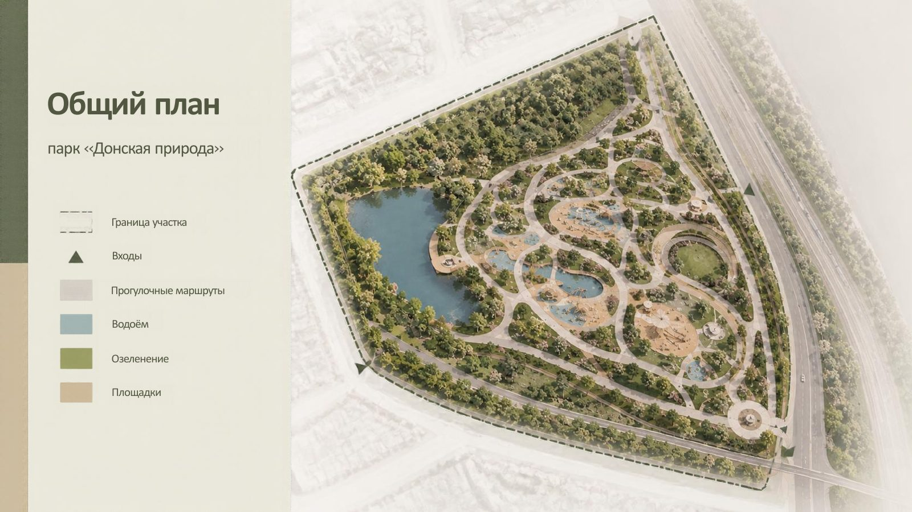
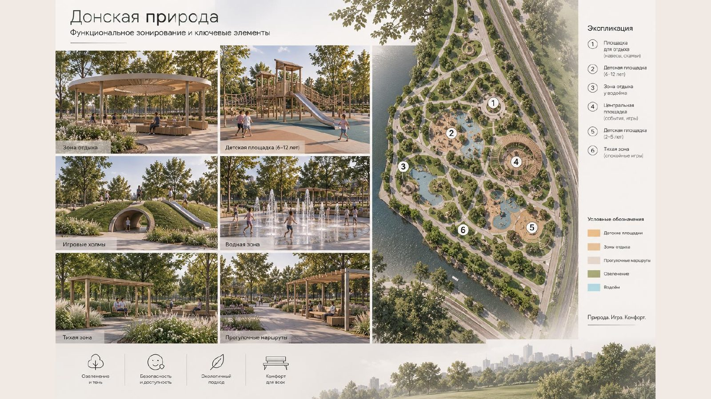
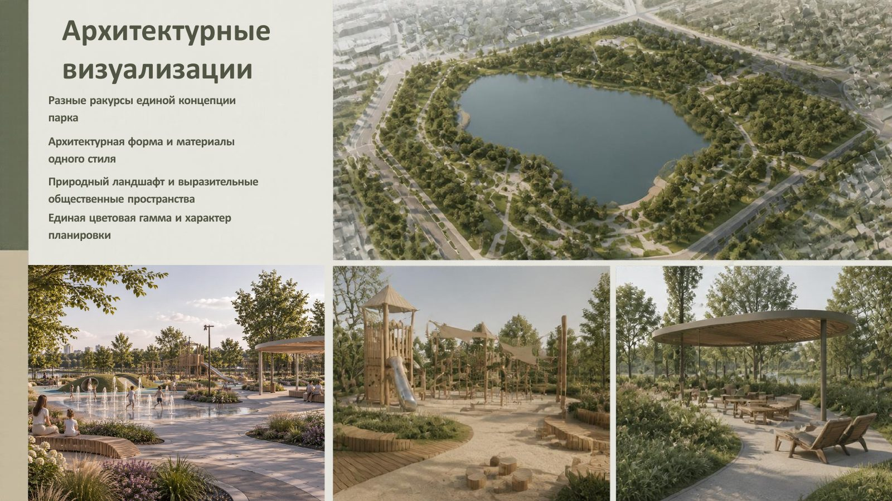
Результат: концепция благоустройства общественного пространства и детского парка.
С помощью ИИ: QGIS, референсы для ИИ, постобработка в Photoshop.
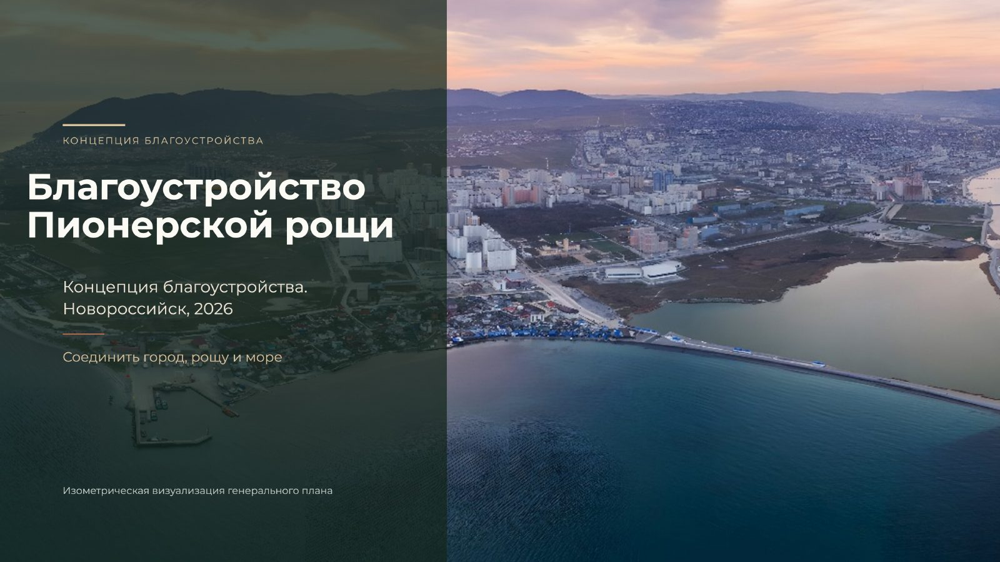
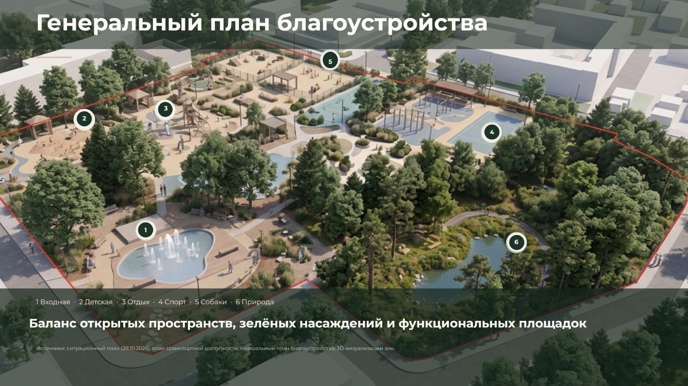
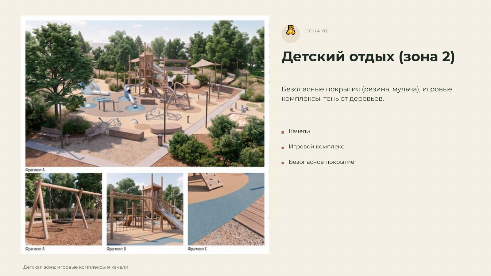
Результат: Новороссийск, концепция 2026.
С помощью ИИ: правильные промпты для более быстрой работы.
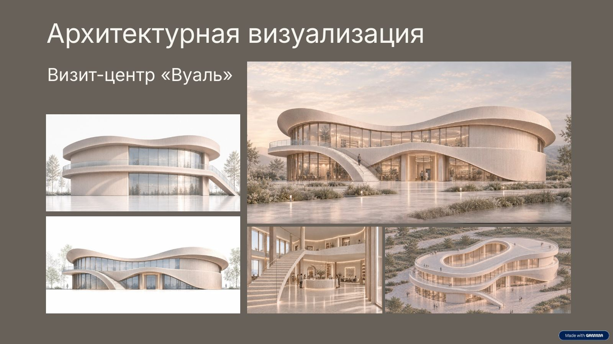
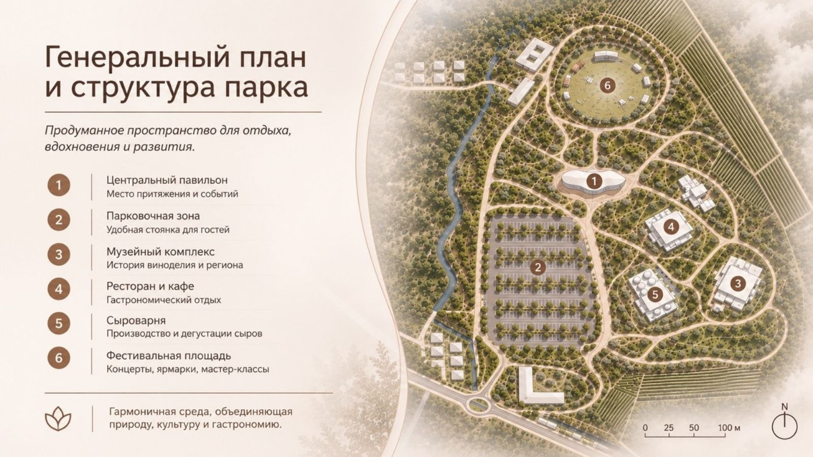
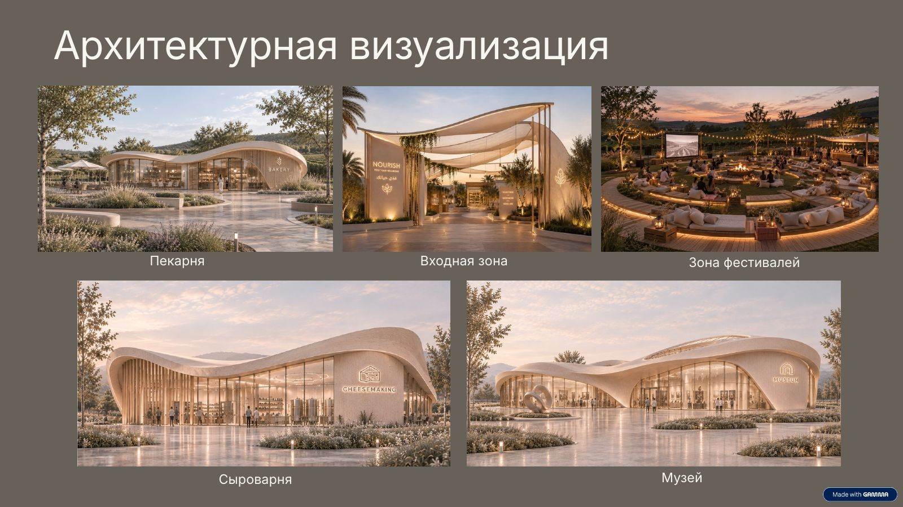
Результат: Хутор Семигорский, Новороссийск.
С помощью ИИ: визуализации, генплан и список материалов получены по одному промпту.

Результат: Ростов-на-Дону.
С помощью ИИ: генплан с функциональными зонами и легендой; визуализации с разных ракурсов.
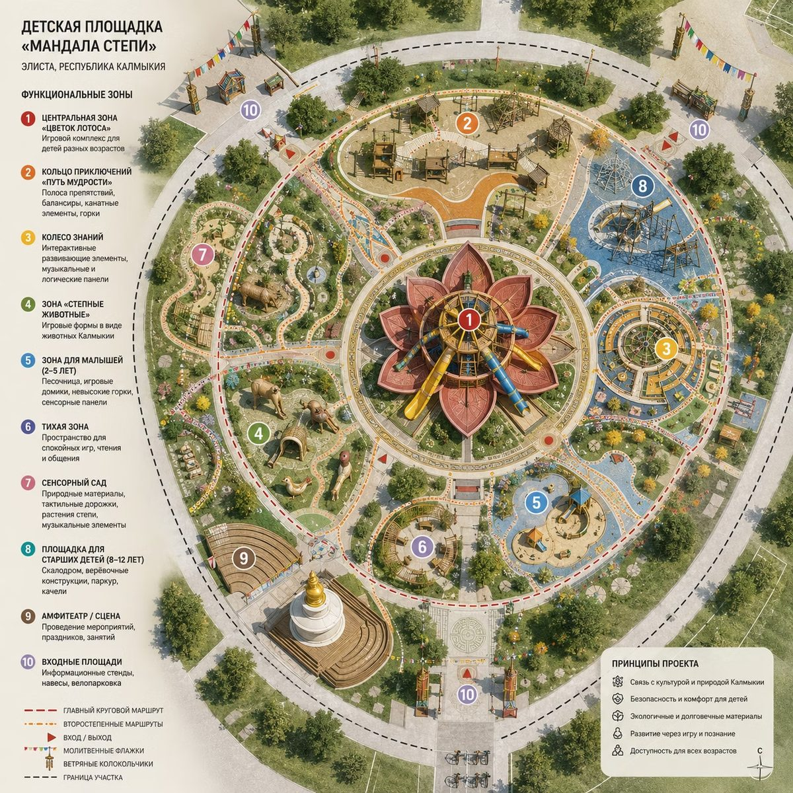
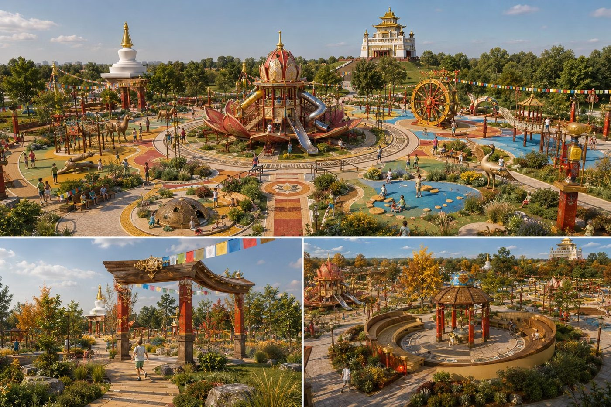
Результат: Элиста.
С помощью ИИ: промптинг, работа с иностранными сервисами, анализ среды.
Проект: многофункциональный спортивно-игровой комплекс, Ейск.
«Освоила навыки промптинга, лучше понимаю работу с иностранными сервисами, углубилась в работу с анализом среды»
С помощью ИИ: ситуационная схема в QGIS, текстуры на 3D-модели и развёртке.
Проект: концепция благоустройства общественного пространства и детского парка.
«Например, ситуационную схему я брала в QGIS, так как он сохранял в нужном формате, а ИИ помог мне наложить текстуры на 3D-модель и развёртку»
С помощью ИИ: QGIS, референсы для ИИ, постобработка в Photoshop.
Проект: Новороссийск, концепция 2026.
«Прошла курс по ИИ в архитектуре. Освоила QGIS, научилась формировать и использовать референсы для ИИ, закрепила навыки постобработки в Photoshop. Теперь уверенно комбинирую генеративные методы и ручную доработку для качественных архитектурных визуализаций»
С помощью ИИ: правильные промпты для более быстрой работы.
Проект: Хутор Семигорский, Новороссийск.
«Научилась создавать правильные промпты, благодаря которым стало намного проще и быстрее работать».
Сотрудникам ЮФУ — 3 600 ₽ (рассрочка 1 800 + 1 800 ₽). Статус отметьте в заявке.
Рассрочка в 2 этапа. Первые 50% оплачиваются при зачислении: 2 500 ₽ при цене 5 000 ₽ и 1 800 ₽ при 3 600 ₽. Остаток вносится вторым траншем в середине обучения. Условия закрепляем при заключении договора с ЮФУ.
Налоговый вычет. Если вы платите за обучение сами и платите НДФЛ, можно вернуть 13% стоимости: 650 ₽ при цене 5 000 ₽ и 468 ₽ при 3 600 ₽. Вычет положен за обучение в организации с лицензией, а лимит расходов в 2026 году составляет 150 000 ₽.
Договор с ЮФУ заключается с физическим или юридическим лицом.
Удостоверение установленного образца на 22 академических часа выдаётся после итоговой аттестации: нужно сдать проект, то есть ссылку на итоговую презентацию и форму с описанием кейса.
Удостоверение выдаётся слушателям с высшим образованием. Если его пока нет, участвовать и сдавать проект можно сразу: после итоговой аттестации выдаём справку, а удостоверение — после того, как вы его получите.
72 академических часа. Вы берёте реальное здание или территорию и доводите до защищённой концепции с расчётом площадей и экономики. 18 900 ₽; выпускникам курса «ИИ в архитектуре» — 14 900 ₽; рассрочка есть. Цена едина для обоих треков.
Подробнее о второй ступени →Оставляете контакты и сведения об образовании. Это займёт две минуты.
Отвечаем на вопросы и подтверждаем участие.
Заключаем договор с ЮФУ, принимаем оплату (можно в два этапа) и зачисляем вас на курс приказом.
Группа набрана — присылаем уведомление и согласуем с вами удобный формат обучения; затем открываем доступ к материалам и чату.
Нет. QGIS и работа с языковыми моделями разбираются с нуля: интерфейс, проект, данные, схема запроса. Достаточно уверенно пользоваться компьютером.
Нет, ни строчки кода. Работа идёт в QGIS, веб-сервисах с нейросетями и Photoshop.
Свой: парк, жилой квартал, территорию университета, место, с которым вы работаете. Если выбрать трудно, можно взять Ботанический сад.
Компьютер, интернет, QGIS (бесплатный), Photoshop по подписке Adobe и любой сервис с языковой моделью. Платные подписки на нейросети не нужны: для целей курса можно пользоваться Алисой AI или другими аналогичными локальными решениями. Установку и настройку всех инструментов разбираем в подготовительном модуле «Спринт 0» учебного пособия.
Если вы выбираете зарубежные сервисы, студент самостоятельно обеспечивает доступ к ним в соответствии с их пользовательскими соглашениями и применимым законодательством.
Объём программы 22 академических часа за 2,5 недели: 10 часов практики на трёх вечерних онлайн-эфирах, 12 часов консультаций и самостоятельной работы между ними — по гибкому графику, с трекингом в чате группы. Точные даты потока — в файле-расписании, который присылаем после зачисления.
Участвовать в курсе и сдавать проект можно сразу. После итоговой аттестации вы получите справку, а удостоверение о повышении квалификации — после того, как получите высшее образование.
Сотрудники ЮФУ. Остальные слушатели платят 5 000 ₽. Статус отметьте в заявке, подтверждение попросим после неё.
Да, допускается рассрочка в 2 этапа: 50% при зачислении, оставшиеся 50% в середине обучения. Условия закрепляются при заключении договора с ЮФУ.
Да, если вы платите сами и у вас есть доход, облагаемый НДФЛ: вернуть можно 13% стоимости. Оформляется через налоговую или работодателя по договору и чеку об оплате.
Можно продолжить на второй ступени «ИИ в редевелопменте»: там вы берёте реальный объект и доводите его до защищённой концепции. 18 900 ₽; выпускникам курса «ИИ в архитектуре» — 14 900 ₽. Цена едина для обоих треков.
Условия возврата прописаны в договоре с ЮФУ. Договор вы подписываете до оплаты, поэтому с условиями можно ознакомиться заранее. Вопросы по договору — куратору ЮФУ: Андреев Александр Александрович, alandreev@sfedu.ru.
Расскажем больше о курсе и поможем подать заявку. Вопросы принимает руководитель курса Александр Кулешов.
По договору, оплате и зачислению: куратор от ЮФУ ААИ Андреев Александр Александрович, alandreev@sfedu.ru.
Мы свяжемся с вами, чтобы согласовать дату старта. Если сроки не подойдут, перенесём участие на следующий поток.
Если хотите уточнить что-то сразу, напишите в Telegram: @alkuleshov.
Попробуйте ещё раз или напишите напрямую в Telegram: @alkuleshov.